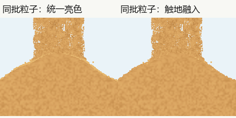

3.11：先找反例，再决定放行
用户要求修柱堆交接，同时保留3.3虽夸张但体验更好的飞溅。验收必须同时看到空中散粒仍活跃、触地亮圈融入；不能用隐藏飞溅层或降低密度换取去亮圈。最终状态与源码绑定见发布登记。
| 问题与级别 | 原证据 | 处理及复查 |
|---|---|---|
| P1：柱脚连续亮圈 | 3.10用户反馈及逐层消融，统一浅色的贴坡散粒叠成描边；此前当作P3细亮边保留的判断撤回。 | 空中保留原亮色，触近及触地混向堆色和固定细小明暗。同一批粒子同刻只切颜色，物理状态相同；原像素及正常尺寸审阅不得见新的亮圈或暗圈。 |
| P1：空中飞溅被削弱 | 真实3.3完整初速，3.10分别乘0.55/0.35；平地近似下会显著压低高度、时长与射程。 | 恢复真实3.3发射方法及参数；同输入执行比对包含初速、尺寸及随机状态。保留当前玻璃、颈宽、埋藏遮挡与暂停同步，不回退主沙柱。 |
| P1：两种绘制有可见差异 | 首轮8帧物理相同，仍有每帧约200余像素不同，最高通道差189；真实索引覆盖反例发现三角形重叠和漏角。 | 只修彩色子类的矩形私有索引。新两臂真实GL重新采样后8/8帧RGB和PNG摘要均相同。保留旧差异图，不接受1级容差替代零差。 |
| P2保留：5秒首次涨堆偏快 | 既有模型问题，3.10及当前实际过程可复核。 | 本轮没有修改主堆积模型，继续单列，不用亮圈修复宣称已解决。 |

源码范围用独立审阅后的精确AST锁定，作为改动边界而非审美判据。旧出口膨胀、空层、粗档实心杆负例和原像素范围保持；普通/批量绘制新检查要求完整状态与RGB零差。新增反例先失败，修后重查相邻连接；没有重存历史图像基线。
正式审核实际范围由两份独立原记录列明；未声称完整原速播放全部视频，也未声称Android、音频或实屏FPS通过。返回实图及录像。